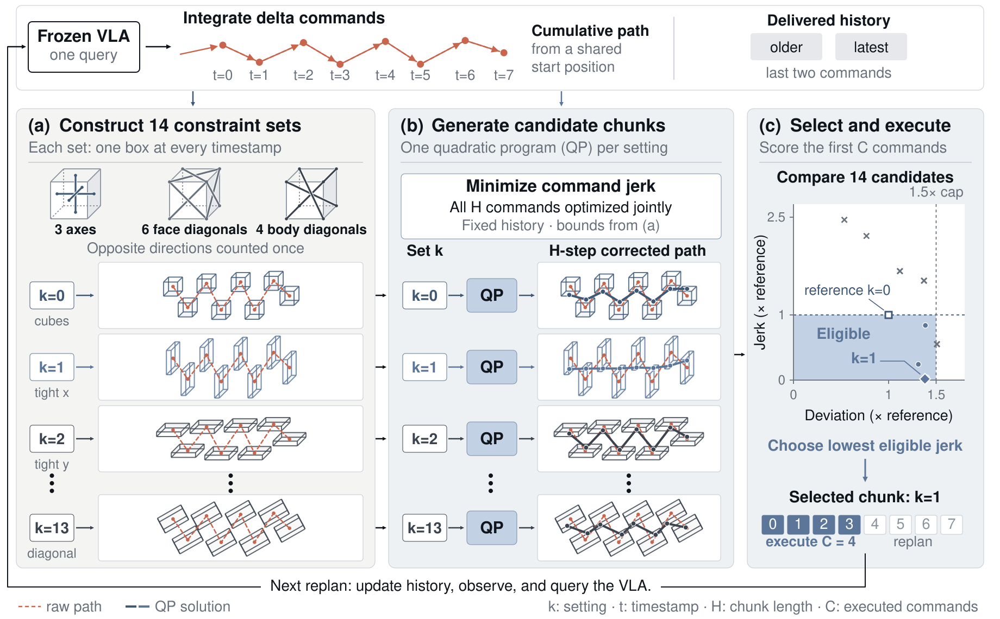
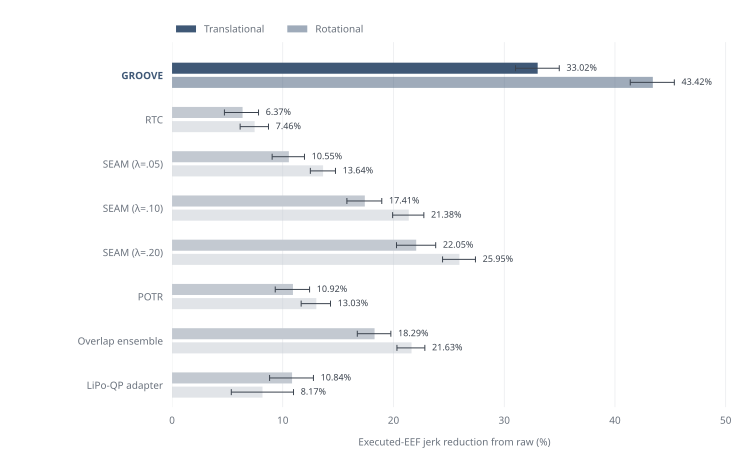
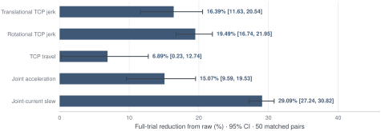

GROOVE
Geometry-Guided Reduction of Operational-Space Jerk in VLA Execution
 POSTECH, DI Lab
POSTECH, DI Lab
1Department of Computer Science and Engineering ·
2Graduate School of Artificial Intelligence
POSTECH, Pohang, South Korea · Correspondence: Hwanjo Yu
This work has been submitted to the IEEE for possible publication. Copyright may be transferred without notice, after which this version may no longer be accessible.
Code, evaluation scripts, and experiment artifacts will be released upon publication.
LIBERO holdout
LIBERO holdout
physical UR5e
no retraining
Watch the Method and Experiments
A 2:59 narrated overview of the method and the UR5e and LIBERO experiments. The method diagrams use synthetic chunks. Physical footage is reconstructed at 3.5 Hz and shown at a labelled 4× playback. The two hardware examples show matched trials in which both methods succeed.
Why Chunked VLA Policies Jerk
Chunked VLA policies jerk in two places: inside each generated action chunk, and at the seam where replanning replaces the unexecuted suffix. GROOVE searches directional correction regions in 3D around the raw end-effector path. It uses the delivered commands to connect the new chunk smoothly and bounds path deviation after every command.
- 01One cube and thirteen directional candidates.Equal-volume regions offer different ways to correct the same path. Select the lowest command-space jerk within a cube-relative deviation cap.
- 02No retraining or extra VLA inference.The regulator operates on each new chunk before execution.
- 0333.02% / 43.42% less translational / rotational EEF jerkon the LIBERO holdout, with success at 95.75% versus 93.75% for raw execution.
- 0429.09% less joint-current slewacross 50 matched UR5e pairs, alongside lower measured TCP jerk.
Abstract
Chunked vision–language–action (VLA) policies execute several commands per query, but jerk within chunks and across replanning boundaries can induce oscillatory motion and sharp actuator transients. We present GROOVE, an online regulator that searches directional correction regions around the raw three-dimensional end-effector (EEF) path, without retraining or additional VLA inference. It optimizes the new chunk using delivered commands as boundary conditions, reducing boundary and within-chunk jerk while bounding cumulative translation and local axis–angle deviation from the raw plan after every command. Using quadratic programs (QPs), GROOVE generates a cube reference and thirteen directional candidates, then selects the one with the lowest command-space jerk under a reference-relative deviation cap. On a held-out LIBERO benchmark, GROOVE achieves the largest reductions among the evaluated methods, reducing translational and rotational EEF jerk by 33.02% and 43.42%, respectively, with task success of 95.75% versus 93.75% for raw execution. Across 50 matched UR5e pairs with measured execution timing, it reduces translational and rotational tool-center-point (TCP) jerk by 16.39% and 19.49% and joint-current slew by 29.09%.
Choose How to Correct the 3D Path
A places a cube or directional box at every raw-path timestamp. B generates a corrected chunk for each of fourteen settings. C selects an eligible chunk and executes its prefix.

Fourteen Settings, One Corrected Chunk
For each setting k = 0…13, one box bounds each timestamp of the same raw chunk. A constructs a cube or directional correction region. B generates a corrected chunk under each setting. C compares all 14 candidates and delivers the selected prefix. The full set contains one cube, 3 axes, 6 face diagonals, and 4 body diagonals.
Explore an illustrative synthetic chunk with H = 8 and C = 4. Every corrected curve and selection score comes from the actual GROOVE solver. Drag the 3D view, select a stage or k, and highlight any timestamp.
The Complete UR5e Campaign
All 50 matched pairs from the stacking and trash-disposal campaign, including successes and failures. The footage is reconstructed at 3.5 Hz and played at 4× speed with a measured TCP trajectory overlay. Each tile shows a matched pair: raw π0.5 on the left, + GROOVE on the right.
Videos load as they scroll into view. The colored trace is the 125-Hz TCP path projected through a camera model fitted on the campaign footage. Badges mark task completion under the shared 300-command cap (raw 23/50, GROOVE 26/50).
LIBERO Execution Videos
All 40 LIBERO tasks for both frozen policies, π0.5 and GR00T N1.7, replayed frame-for-frame from the logged executions, with the executed end-effector path projected through the true simulator camera. Left: raw. Right: + GROOVE. Same task, same initial state, same policy seed.
Rendered by replaying the recorded delivered commands in the LIBERO simulator. Replay terminates at the same step count as the original logged episode. These 80 development pairs use seed 9361. The quantitative holdout below uses a separate set of 400 assignments per method.
Lower Jerk on the LIBERO Holdout
GROOVE achieves the largest translational and rotational EEF jerk reductions among the evaluated methods. All nine conditions share the frozen π0.5 checkpoint, initial states, seeds, and suite command caps. Each query predicts H = 10 commands and delivers C = 5. Whiskers show task-clustered 95% CIs.

| Method | Trans. reduction | Rot. reduction | Success |
|---|---|---|---|
| Raw | Reference | Reference | 93.75% |
| RTC | 6.37%[4.73, 7.81] | 7.46%[6.15, 8.71] | 95.00% |
| SEAM (λ=.05) | 10.55%[9.04, 11.96] | 13.64%[12.49, 14.76] | 94.25% |
| SEAM (λ=.10) | 17.41%[15.79, 18.94] | 21.38%[19.92, 22.74] | 95.25% |
| SEAM (λ=.20) | 22.05%[20.27, 23.81] | 25.95%[24.43, 27.40] | 97.25% |
| POTR | 10.92%[9.32, 12.42] | 13.03%[11.66, 14.31] | 95.50% |
| Overlap ensemble | 18.29%[16.73, 19.76] | 21.63%[20.31, 22.83] | 96.25% |
| LiPo-QP adapter | 10.84%[8.81, 12.77] | 8.17%[5.35, 10.97] | 96.00% |
| GROOVE | 33.02%[31.02, 34.97] | 43.42%[41.38, 45.36] | 95.75% |
Jerk reductions are relative to raw execution. Success changes by +2.00 percentage points [−0.25, 4.50] for GROOVE versus raw. Query and command budgets are shared across methods. Runtime and realized path deviation are measured separately.
Measured Motion and Actuator Demand
Across stacking and trash disposal, the UR5e’s 125-Hz telemetry records 16.39% / 19.49% lower translational / rotational TCP jerk and 29.09% lower joint-current slew under the deployed execution stack. Success is 52% (26/50) with GROOVE and 46% (23/50) with raw execution.

The success difference is +6.00 percentage points [−14.00, 26.00]. Brackets denote 95% confidence intervals.